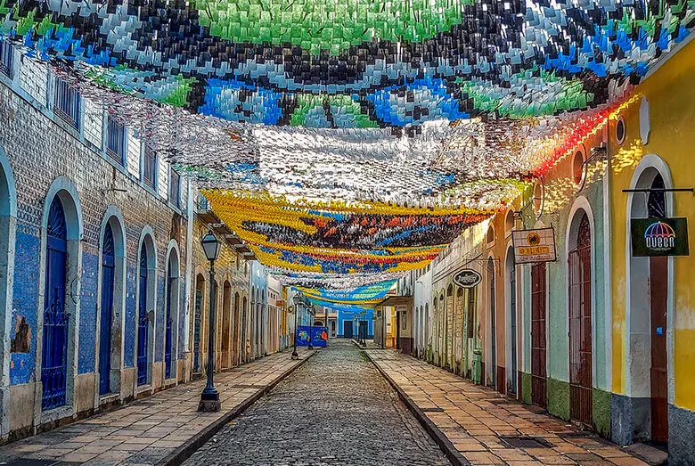
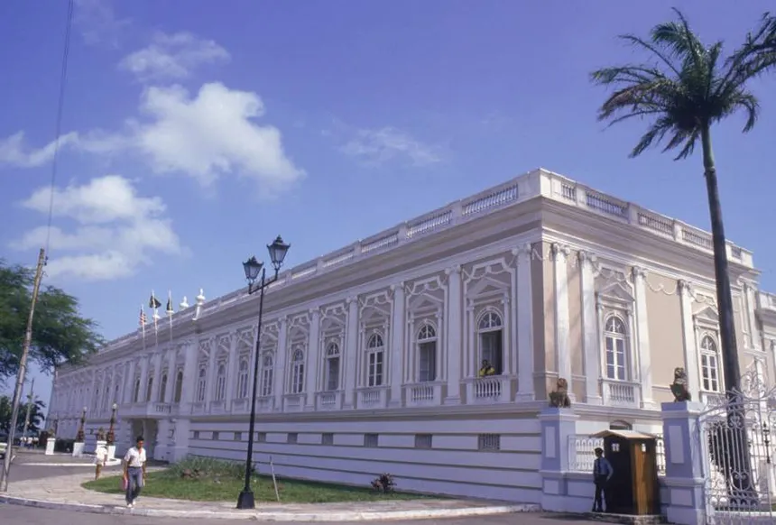
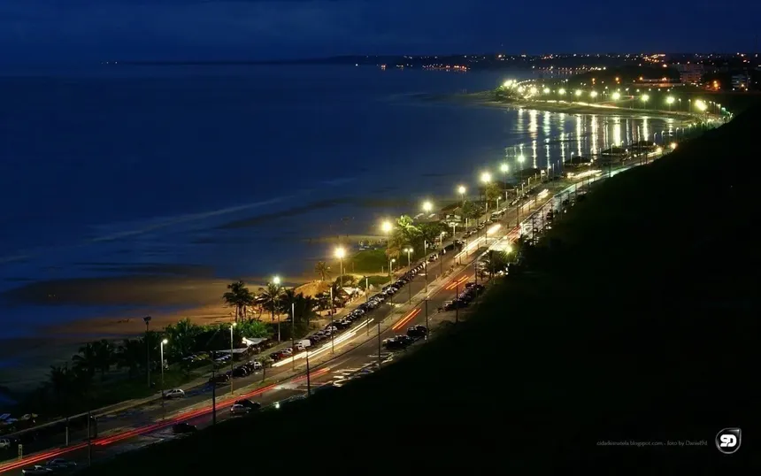

SEU PRÓXIMO DESTINO:
Conheça São Luís

São Luís, a capital cultural do Maranhão, oferece de tudo, desde restaurantes que valorizam a culinária regional até tradicionais barracas de comida de rua. Aqui, exploramos a cidade e descobrimos suas riquezas gastronômicas, marcadas por sabores únicos e forte identidade cultural.

PARA OS AMANTES DE HISTÓRIA
Vem conhecer 3 pontos turísticos imperdíveis em São Luís
São Luís reúne atrações que vão desde igrejas centenárias e casarões coloniais espalhados pelo Centro Histórico até praias amplas ao longo do litoral. A capital maranhense oferece opções durante todo o ano — famílias podem visitar museus e espaços culturais, visitantes podem explorar bairros tradicionais e os amantes da paisagem podem aproveitar caminhadas pela orla com belas vistas. Os casarões revestidos de azulejos portugueses e a arquitetura histórica da cidade formam cenários marcantes que encantam visitantes e fotógrafos.
1. Centro Histórico
O Centro Histórico de São Luís é um conjunto arquitetônico colonial localizado no coração da cidade. Formado por casarões dos séculos XVIII e XIX, é conhecido pelos azulejos portugueses e ruas de pedra. Reconhecido como Patrimônio Mundial, reúne museus, igrejas e praças que contam a história viva da capital maranhense.
- Famílias interessadas em cultura e história
- Casais que gostam de passeios culturais e fotos
- Turistas que apreciam arquitetura e museus
Bom para:
2. Palácio dos Leões
O Palácio dos Leões é um edifício histórico situado às margens da Baía de São Marcos. Construído sobre antigas fortificações francesas, o palácio combina arquitetura imponente e valor político-cultural. Do local, é possível apreciar uma das vistas mais marcantes do litoral de São Luís.
- Famílias em passeios educativos
- Casais que apreciam paisagens e história
- Visitantes interessados em patrimônio histórico
Bom para:
3. Praia do Calhau
A Praia do Calhau é uma praia urbana localizada na orla de São Luís. Bastante frequentada por moradores e visitantes, combina faixa de areia extensa, forte ventilação e uma orla com bares e restaurantes. É um dos principais pontos para caminhadas, lazer e para apreciar o pôr do sol na capital maranhense.
- Famílias em busca de lazer ao ar livre
- Casais para caminhadas e pôr do sol
- Amigos que gostam de praia e vida urbana
Bom para:

As melhores coisas para fazer em São Luís revelam a identidade da cidade como um importante porto histórico do Nordeste brasileiro. Frequentemente considerada a essência cultural do Maranhão, São Luís oferece uma atmosfera única marcada pela mistura de influências indígenas, africanas e europeias, refletida em sua música, arquitetura e tradições vivas ao longo de todo o ano.